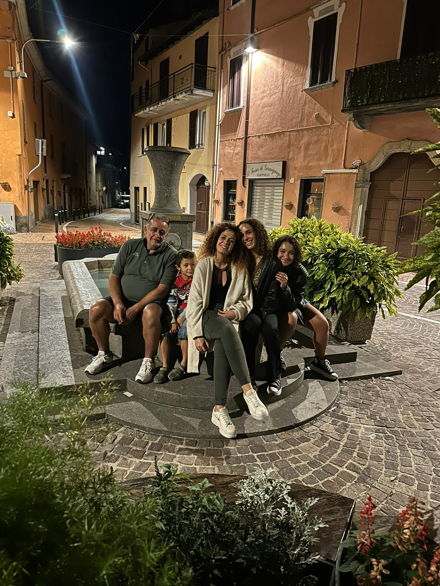
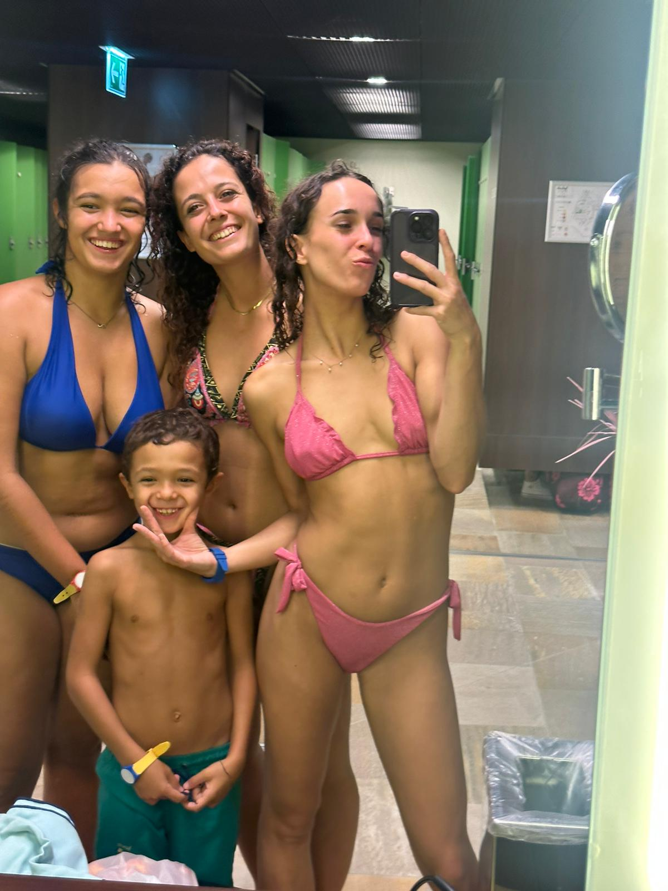
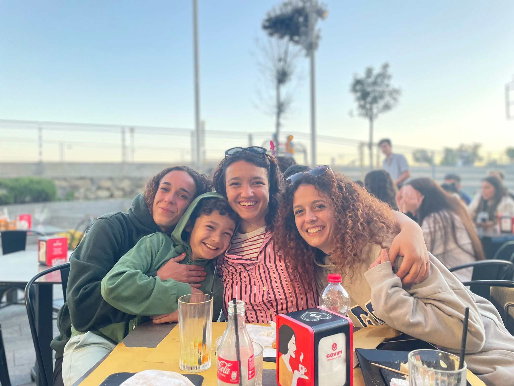

UN PICCOLO INDOVINELLO
Chissà che giorno è oggi ^-^
Non ricordo bene... forse scorrendo un po' me lo ricorderò.
SCORRI
AH, GIÀ
È il tuo compleanno
É un giorno importante per te, e anche se non sono li con te volevo farti sentire come se fossimo assieme
SCORRI
Che compleanno sarebbe senza torta
Esprimi un desiderio.
tocca ogni candelina, una alla volta
Un piccolo pensiero
C'è una lettera per te.
Cara sorellina,
Buon compleanno sorellona!! Ogni volta che ti penso, mi viene in mente tutti i posti che stai visitando, le tue avventure in posti nuovi e alla tua capacitá di adattarti in qualsiasi posto e situazione. E anche se non ci vediamo spesso, il nostro legame rimane forte come una volta. Tu sei fuori a creare la tua vita, e nonostante io senta molto la tua mancanza, io sono felice che tu stia vivendo la tua vita al massimo e faró sempre il tifo per te. Per il tuo coraggio, la tua determinazione e la tua forza. Sono orgogliosa di te, dei tuoi traguardi. Ti auguro un compleanno speciale, pieno di gioia, amore e felicità. Ti voglio bene e ti auguro tutto il meglio per il futuro.
Con affetto,
- La tua sorellina
tocca la busta per aprirla
Qualche momento assieme

Tutti assieme
Quando ci vieni a trovare
Piangere é inevitabileAUGURI!
Ogni momento che passiamo assieme, diventa un ricordo speciale dentro di me. E ogni volta che devi partire, piango sempre. Ma so che un giorno ritornerai
SCORRI
Well... ho pensato anche a qualcosa che potrebbe farti piacere
Apri il regalo
Farti un regalo é davvero difficile non sapendo quando arriverá dove sarai, quindi ho pensato di fare qualcosa di piú semplice e abbinarlo a qualcosa creato da me
il tuo codice regalo
COD-COD-COD-COD